Artikel
PAGE 1/2

Maaf, Tolong & Terimakasih
Sebagai manusia, moralist sering melakukan kesalahan terhadap orang lain. Baik disengaja mau pun gak disengaja. Sebagai makhluk sosial, sadar gak sadar, moralist sering ... [Baca Selengkapnya]

Moral Bangsa Indonesia
Di website ini moralist sering menyinggung kata moral. Mungkin banyak yang tahu dan mengerti moral itu apa namun sulit untuk dijelaskan. Ada juga yang gak tahu sama sekali tentang ... [Baca Selengkapnya]

Menyikapi Musuh Dalam Kehidupan
Moralist apakah mengetahui siapa musuh kita sesungguhnya? Permusuhan berawal dari suatu pertiakaian atau selisih paham yang tidak diselesaikan secepatnya. Sebagai manusia, merupakan ... [Baca Selengkapnya]

5S: Senyum, Salam, Sapa, Sopan, dan Santun
Moralist tahu gak bagaimana menjadi orang ramah dengan cara yang jitu? Cara ini gratis dan bisa dilakukan kapan saja dan di mana saja. Bahkan, mungkin banyak diantara moralist yang sudah gak asing dengan ... [Baca Selengkapnya]
Keramahan Orang Indonesia? Nyata Gak Ya?
Indonesia itu negara yang unik banget. Keramahan orang-orangnya sudah terkenal di mancanegara. Gak heran banyak orang asing yang ingin tinggal di Indonesia. Saking ramahnya, orang Indonesia sering ... [Baca Selengkapnya]
Kebaikan Yang Sejati
Apakah moralist tahu apa arti dari kebaikan? Kebaikan lebih dari sekedar berbuat apa yang baik dan benar. Ketika seseorang disebut baik; itu berarti mereka baik secara moral. Sesuatu yang harus moralist mengerti ... [Baca Selengkapnya]
|  | MORAL CHALLENGE? Yuk Mulai..!! |
#3 |
BERHENTI DARI KEBIASAAN BURUKAyo beranikan diri untuk melakukan perubahan! Ubahlah kebiasaan burukmu! Ganti dengan kebiasaan baik! |
Tentang Kami
Inspire The Moral (Spiral) merupakan website yang bertujuan untuk menginspirasi semua orang mulai dari yang muda sampai yang tua. Dan juga memberikan Moral Challenge untuk Melakukan aksi nyata yang bermoral dan memberi inspirasi serta teladan bagi banyak orang. Selengkapnya.. |
Ikuti Kami |